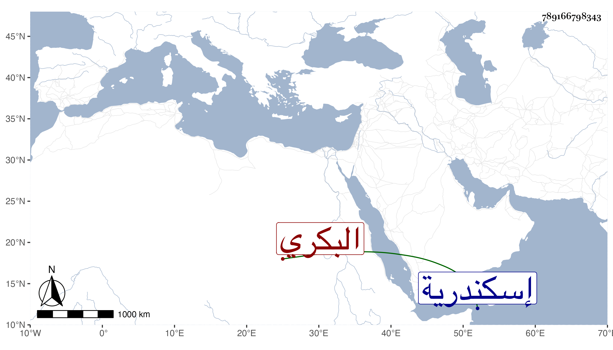

0902Sakhawi.DawLamic.ITO20230111-ara1.EIS1600.789166798343
Biography ID: 789166798343
1062
زوجة الجلال البكري امرأة شريفة . تزوجها بعد الشهاب المحلى قاضي إسكندرية فأقامت معه مدة . وماتت في سابع عشر ذي الحجة سنة اثنتين وثمانين وصلى عليها من الغد بمصلى باب النصر ثم دفنت بحوش البيبرسية وفرق ثلثها وهو قدر كبير بل فرق أيضا من حصته مع كونه أجحف فيها رحمها الله .
